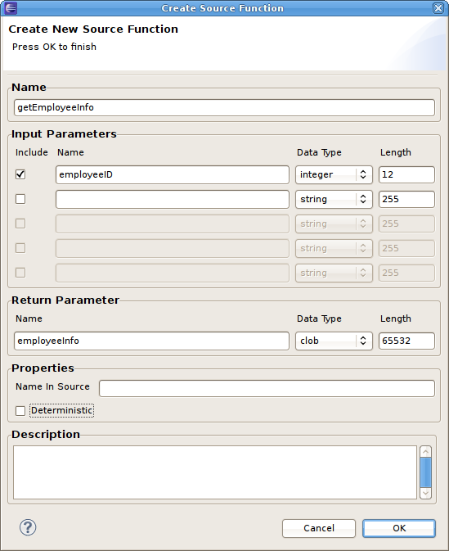
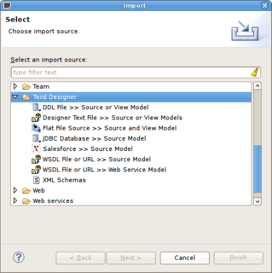
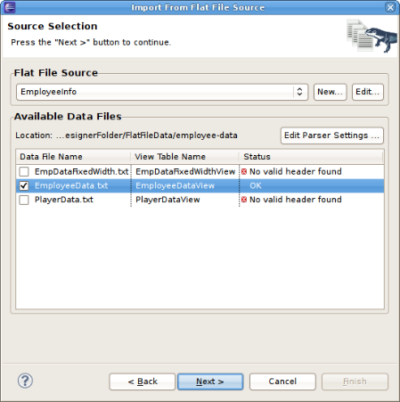
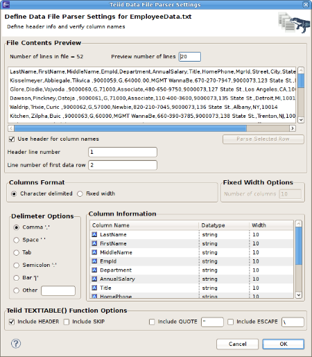
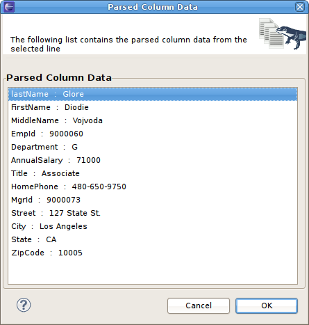
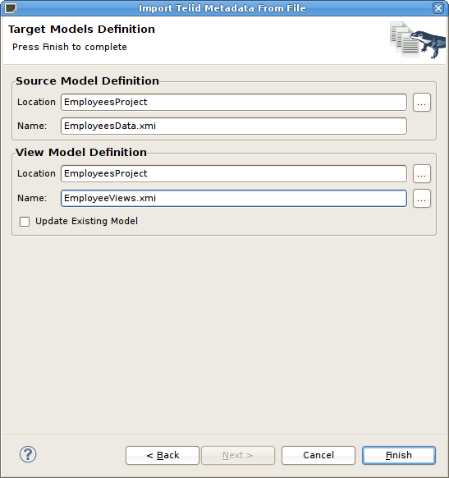
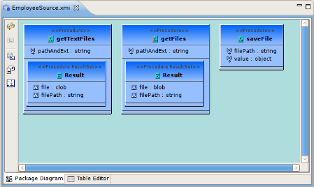
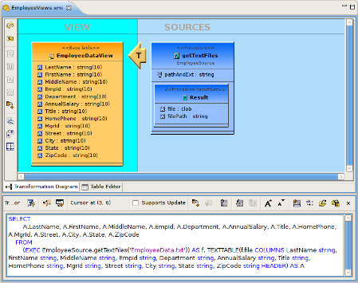
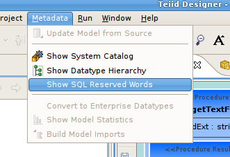
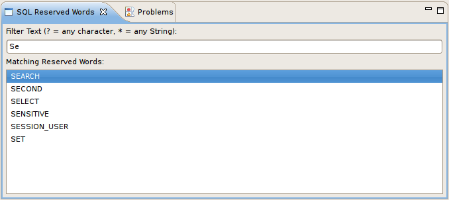

Relational Model Source Functions
Create Source Function
To improve ability to utilize database functions within View transformations, a new "New Child > Source Function" action and wizard was added to assist in building a source procedure that conforms to a function structure, including input and output parameters. Prior to Teiid Designer 7.5, these functions were required to be modeled as User Defined functions.. (TEIIDDES-992)
To create a new Source Function, select a Relational Source Model in your workspace and select "New Child > Source Function". Enter your database function name, define input parameters including datatype and length, specify output parameter info, set options and click OK.
The resulting source function will be added to your model and will be represented by the icon.
{kind=link}

New Flat File Import Wizard View
Teiid supports Flat Files as data sources. In release
7.5, Teiid Designer introduces a new Import wizard designed to assist
in creating the metadata models required to access the data in your
flat files. As with Designer's JDBC, Salesforce and WSDL importers, the
Flat File importer is based on utilizing a specific Data Tools
Connection Profile. (TEIIDDES-1017)
The results of the importer will include a source model containing the three Flat File procedures supported by Teiid. Namely:
- getFiles()
- getTextFiles()
- saveFile()
The importer will also create a new view model containing a view table for each of your selected flat file source files. Within these view tables will be generated SQL transformations containing the "getTextFiles()" procedure from your source model as well as the column definitions and parameters required for the Teiid TEXTTABLE() function used to query the data file. You can also choose to update an existing view model instead of creating a new view model.
The TEXTTABLE function, as defined in the Teiid documentation, processes character input to produce tabular ouptut. It supports both fixed and delimited file format parsing. The function itself defines what columns it projects. The TEXTTABLE function is implicitly a nested table and may be correlated to preceeding FROM clause entries.
TEXTTABLE(expression COLUMNS <COLUMN>, ... [DELIMITER char] [(QUOTE|ESCAPE) char] [HEADER [integer]] [SKIP integer]) AS name
Teiid Designer will construct the full SQL statement for each view table in the form:
SELECT
A.Name, A.Sport, A.Position, A.Team, A.City, A.StateCode, A.AnnualSalary
FROM
(EXEC PlayerDataSource.getTextFiles('PlayerData.txt')) AS f, TEXTTABLE(f.file COLUMNS Name string, Sport string, Position string, Team string, City string, StateCode string, AnnualSalary string HEADER 2 SKIP 3) AS A
The import option is labeled "Flat File Source
>> Source and View Model" and is show below in the
Import wizard's first page under the Teiid Designer category. Note
also
that Designer's import labels have changed to reflect both a
source (i.e. JDBC Database) and one or more target metamodels that will
be created or updated during the import process.

The first page of the wizard requires selection of an existing Flat File Source connection profile in order to locate the designer source file folder. Once selected (or created view "New..." button) the available data files will be displayed in the table.
Check each data file you wish to process. Each file will be used to construct a view table containing the required SQL transformation for retrieving your data and returning a result set.

The first page of the wizard requires selection of an existing Flat File Source connection profile in order to locate the designer source file folder. Once selected (or created view "New..." button) the available data files will be displayed in the table.
Check each data file you wish to process. Each file will be used to construct a view table containing the required SQL transformation for retrieving your data and returning a result set.

At any time you can select a data row in your File
Contents Preview section and click the "Parse Selected
Row" button. A dialog will be displayed showing the list of
columns and the resulting column data. If your column data is not what
you expected, you'll need to adjust your settings accordingly.

The last page of the wizard, the Target Models
Definition page, contains two model definition sections. Both
sections allow you to select a workspace location to place the
generated model. In the case of the View Model Definition,
you
can select an existing view model via the "..." browse button and
the "Update Existing Model" checkbox will be selected.

This import operation will result in the generated source
model shown below...

... and generated view tables containing the completed SQL
required to access the data in your flat file using the "getFiles"
procedure above and the Teiid TEXTTABLE() function.
Connection Management

Teiid SQL Grammar Reserved Words View
SQL Reserved Words View

